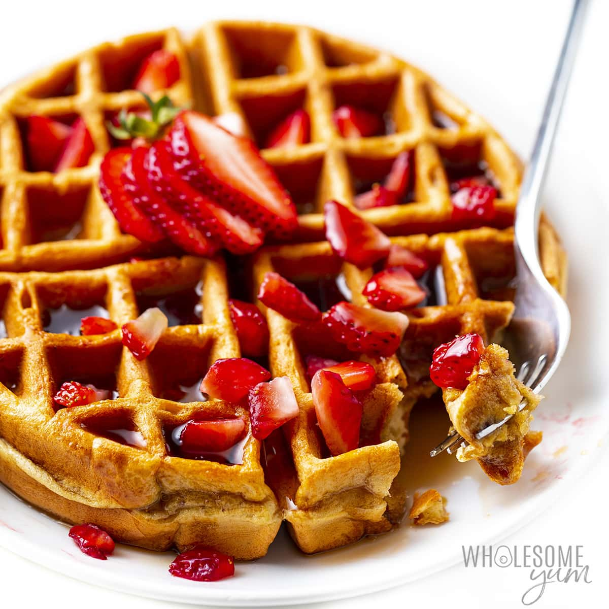

Protein Waffles

Description
Waffles are usually a breakfast meal. However, everyone knows that they're really just dessert in disguise hehe!
Ingredients
- 1 cup old-fashioned oats
- 2 eggs
- 3 egg whites
- 1 teaspoon honey
- 1 splash pure vanilla extract, or to taste
- 1 pinch ground cinnamon, or to taste
Steps
- Preheat a waffle iron according to manufacturer's instructions.
- Blend oats, cottage cheese, eggs, egg whites, honey, vanilla extract, and cinnamon in a blender until creamy./li>
- Ladle batter into preheated waffle iron according to manufacturer directions and cook the waffles until golden and crisp, about 5 minutes. Repeat until entire batch of batter is used